도시계획기사 (2013-03-10 기출문제)
1과목: 도시계획론
1. 주민의 사교, 오락, 휴식 및 공동체 활성화 등을 위하여 근린주거구역별로 설치하고, 시·군 전반에 걸쳐 계통적으로 균형을 이루도록 하여야 하는 일반광장의 종류는?
- 중심대광장
- 교차점광장
- 경관광장
- 근린광장
(정답률: 88%)

2. 영국의 도시계획가인 게데스(P.Geddes)가 구분한 도시활동의 요소가 아닌 것은?
- 생활
- 생산
- 교통
- 위락
(정답률: 67%)
3. 도시의 부양능력에 비하여 지나치게 많은 인구가 집중하여 인구적으로만 비대해진 도시화를 무엇이라 하는가?
- 역도시화(de-urbanization)
- 어반스프롤(urban sprawl)
- 외부경제(external economy)
- 가도시화(pseudo-urbanization)
(정답률: 84%)
4. 20세기 이후에 발표된 도시계획헌장들 중 최초의 도시계획헌장으로서, 이후 전 세계 도시계획 및 설계분야의 발전에 많은 영향을 미친 것은?
- 뉴어바니즘(New Urbanism)헌장
- 메가리드(Megaride)헌장
- 아테네(Athens)헌장
- 마추피추(Machu-Picchu)
(정답률: 84%)
5. 도로망의 구성형태별 특징이 잘못 연결된 것은?
- 격자형 : 도심의 기념비적인 건물을 중심으로 주변과 연결한다.
- 방사형 : 교통량이 도심으로 집중하는 경향이 있다.
- 대각선 삽입형 : 격자형과 교차하므로 토지이용상 비효율적이다.
- 방사환상형 : 인구 100만 이상의 대도시 계획에 적합하다.
(정답률: 82%)
6. 도시계획의 필요성으로 옳지 않은 것은?
- 토지이용의 효율화를 높이기 위하여
- 공공재의 남용을 방지하기 위하여
- 인간사회의 개인적인 목표를 이루기 위하여
- 도시가 원활히 기능할 수 있게 하기 위하여
(정답률: 94%)
7. 페리(C.A. Perry)가 주장한 근린주구이론에 대한 비판의 의견과 관계가 없는 것은?
- 근린주구단위가 교통량이 많은 간선도로에 의해 구획됨으로써 도시 안의 섬이 되었고, 이로써 가정의 욕구는 만족 되었을지 몰라도 고용의 기회가 많이 줄어드는 계기가 되었다.
- 근린주구계획은 초등학교에 초점을 맞추고 있는데, 대부분 사회적 상호작용이 어린 학생으로부터 유발된 친근감을 통하여 시작된다는 것은 불명확하다.
- 지역의 특성을 고려하여 다양한 형태의 주거단지와 대규모의 상업시설을 배치시킴으로써, 지역 커뮤니티를 와해시키는 결과를 초래하였다.
- 미국에서 발달한 근린구주계획은 커뮤니티형성을 위하여 비슷한 계층을 집합시키는 계획이 이루어짐으로써 인종적 분리, 소득계층의 분리를 가져와 지역사회 형성을 오히려 방해하였다.
(정답률: 63%)
8. 계획이론 중 다비도프(Davidoff)에 의해 주창되었으며, 1960년대 미국의 법조계에서 형성된 피해구제절차와 같은 사회제도를 계획 개념으로 수용하여 주로 강자에 대한 약자의 이익을 보호하는데 적용된 이론은?
- 종합적 계획
- 교류적 계획
- 옹호적 계획
- 급진적 계획
(정답률: 89%)
9. 다음 중 르꼬르뷔제(Le corbusier)가 1920년대에 제안한 현대도시 계획안에서의 도시계획과 설계 이론을 구성하는 요소에 해당하지 않는 것은?
- 수직적 건물구성
- 고층 건물 사이의 충분한 녹지공간
- 보차접근의 분리
- 도시중심부의 대규모 상징적 오픈스페이스
(정답률: 46%)
10. 부동산 소유자간 또는 개발업자와 구입자 사이에 체결되는 민사계약으로 지역제보다 훨씬 상세하고 엄격한 규정으로 되어 있으며, 일반적으로 토지·건물대장 및 권리서에 기재되어 부동산 매매시 신규 구입자에게로 승계되는 것으로 미국 근대도시계획성립기에 지역제의 바탕이 된 제도는?
- 협약(covenant)
- 획지분할규제(subcivision control)
- 공도(official mapping)
- 성장관리(growth management)
(정답률: 78%)
11. 미래도시의 기능과 구조변화로 옳지 않은 것은?
- 도시의 공간적 구조는 다양하고 확대되어 나타날 것이다.
- 시민생활의 편의성과 경제활동의 능률성을 극대화할 것이다.
- 사회기능이 통일되어 사회적 구조가 단일화 될 것이다.
- 제도적 구조는 민주적이고 자치적인 요소가 강화될 것이다.
(정답률: 91%)
12. 다음 중 1960년대 이후에 나타난 우리나라 도시화 현상의 특징으로 거리가 먼 것은?
- 짧은 기간 동안 산업화와 더불어 진행되었다.
- 생활권 중심의 지방거점도시들이 균형적으로 성장하였다.
- 경부축을 중심으로 산업단지의 개발 등 집중적인 투자가 진행되었다.
- 대도시와 수도권 중심으로 인구가 집중되었다.
(정답률: 84%)
13. 도시내부공간구조 모형 중의 하나인 동심원 이론에 대한 설명으로 틀린 것은?
- 도시생태학을 기본 이론으로 하고 있다.
- 도시성장의 일반적인 과정 속에는 집중과 분산의 개념이 동시에 포함된다고 보았다.
- 토지이용은 중심업무지구로부터 5개의 동심원으로 구성된다.
- 도시 내의 각종 활동과 기능은 주요 교통로를 따라 이루어진다.
(정답률: 60%)
14. 필지주의의 소규모 개발에 의한 난개발, 단조로운 경관, 과도한 용도 순화 등의 문제를 해결하기 위하여 일정 규모 이상의 개발에 있어서 전체를 하나의 규제단위로 하여 전체지역의 조화를 꾀한 토지이용규제 방식은?
- 개발권 이양제(TDR)
- 상여지역제(Incentive Zoning)
- 계획단위개발(PUD)
- 성능지역제(Performance Zoning)
(정답률: 85%)
15. 지리공간데이터를 분석·가공하여 국토계획, 지역계획, 도시계획 등의 각종 계획의 입안과 추진에 필요한 토지, 자원, 환경, 사회, 문화와 관계된 각종자료를 컴퓨터에 종합적·체계적으로 저장하고 처리할 수 있는 시스템의 특징과 거리가 먼 것은?
- 대량의 정보를 쉽게 저장하고 관리할 수 있다.
- 원하는 정보의 검색 및 변환이 가능하다.
- 다양한 정보의 중첩을 통한 종합적 해석이 가능하다.
- 복잡한 정보를 분류하고 해석하는데 유용하나, 한 번 구축된 데이터는 업데이트하기 어렵다.
(정답률: 92%)
16. 도시인구 추정 방법 중 인구 성장의 상한선을 미리 상정한 후에 미래 인구를 추계하는 인구예측모형으로, 곡선이 S자형의 비대칭곡선으로 이루어진 추세분석은?
- 지수모형(exponential model)
- 곰페르츠모형(Gompertz model)
- 로지스틱모형(logistic model)
- 회귀모형(regression model)
(정답률: 78%)
17. 경관관리의 기본원칙으로 가장 옳은 것은?
- 관광객과 외부인의 생활 및 경제활동을 적극 유도할 수 있는 경관이 유지될 수 있도록 관리할 것
- 우수한 경관을 보전하고 훼손된 경관을 개선·복원하고 새롭게 형성되는 경관은 개성있는 요소를 가지도록 유도할 것
- 각 지역의 경관이 보편성을 가질 수 있도록 하며, 지역주민의 참여를 배제할 것
- 개발과 관련된 행위는 주변 경관과 별도의 이미지를 갖도록 특성화 할 것
(정답률: 84%)
18. 1970년대 중반 이후 미국에 도입된 성장관리정책에 대하여 넬슨(Arthur C. Nelson)과 듀칸(Janes B. Ducan)이 제시한 목적과 거리가 먼 내용은?
- 경제적 형평성 제고
- 효율적인 도시형태구축
- 납세자의 보호
- 어반스프롤의 방지
(정답률: 62%)
19. 다음 중 머디(R. A. Muride, 1997)가 미국의 여러 도시들을 대상으로 한 사회공간구조의 분석 결과 밝혀낸 다핵패턴을 이루게 되는 유형에 해당하지 않는 것은?
- 사회·경제적 지위
- 가족구조
- 인종그룹
- 사회제도구조
(정답률: 59%)
20. 전국의 고용인구는 5천만 명, 전국의 섬유산업 종사자수는 1백만 명일때, 고용인구 2백만 명, 섬유산업 종사자수가 5만 명인 도시의 섬유산업에 대한 입지상계수(LQ)는 얼마인가?
- 0.5
- 0.8
- 1.25
- 1.5
(정답률: 77%)
2과목: 도시설계 및 단지계획
21. 지구단위계획 수립시 상업용지의 획지 및 가구계획 기준으로 옳지 않은 것은?
- 구역 중심지의 주간선도로 또는 보조간선도로의 교차로 주변에 계획한다.
- 주간선도로 또는 보조간선도로를 따라 배치되는 가구는 2열 이상을 배열이 되도록 한다.
- 가구 규모는 시설입지에 대한 다양한 요구를 충족시킬 수 있도록 다양한 규모로 계획한다.
- 도로에서의 접근이 용이하도록 계획한다.
(정답률: 79%)
22. 래드번(Radburn)계획의 기본원리와 가장 저리가 먼 것은?
- 슈버블럭의 구성
- 보·차의 혼용
- 공동의 오픈스페이스 조성
- 기능에 따른 도로 구분
(정답률: 79%)
23. 도시공원 및 녹지 등에 관한 법률에 따른 녹지의 세분에 해당하지 않는 것은?
- 시설녹지
- 연결녹지
- 경관녹지
- 완충녹지
(정답률: 79%)
24. 부정형한 지형에도 적용하기 용이하고 통과 교통이 차단되어 보행자들이 안전하게 보행할 수 있으나, 개별획지로의 접근성은 다소 불리한 도로 유형은?
- 격자형 도로
- T자형 도로
- 쿨데삭형 도로
- S자형 도로
(정답률: 79%)
25. 근린생활권의 위계가 옳은 것은?
- 근린주구 ＞ 근린분구 ＞ 인보구
- 근린분구 ＞ 근린주구 ＞ 인보구
- 인보구 ＞ 근린분구 ＞ 근린주구
- 근린분구 ＞ 인보구 ＞ 근린주구
(정답률: 88%)
26. 도시공원 중 주로 도보권 안에 거주하는 자의 이용에 제공할 것을 목적으로 하는 도보권 근린공원의 유치거리 기준으로 옳은 것은?
- 250m 이하
- 500m 이하
- 1000m 이하
- 1500m 이하
(정답률: 55%)
27. 경관조성의 기본방향으로 틀린 것은?
- 지역의 기후, 식생, 지형 등 자연조건에 순응해야 한다.
- 조화와 개성을 부여할 수 있어야 한다.
- 보행자공간을 중심으로 휴식, 놀이, 교육, 교류의 공간을 배치한다.
- 인간척도보다는 도시의 상징이 될 수 있는 랜드마크를 우선 발굴 또는 조성하여야 한다.
(정답률: 91%)
28. 도시설계관련 학자들의 연구 내용이 잘못 연결된 것은?
- Kevin Lynch - 도시의 이미지
- Gorden cullen - 연속시각(Seral Vision)이론
- Christopher Alexander - 전이공간
- Oscar Newman - 방어공간(defensible space)
(정답률: 58%)
29. 건폐율 60%로 규제되고 있는 지역에 연면적 3000m2의 건물을 5층으로 짓고자 할 때 필요한 최소한의 대지면적은?
- 800m2
- 900m2
- 1000m2
- 1200m2
(정답률: 68%)
30. 페리(Clarence A. Perry)가 주장한 근린단위(Neighborhood Unit)에 관한 6가지 원칙에 해당하지 않는 것은?
- 하나의 초등학교를 유지할 수 있는 인구규모를 갖도록 개발한다.
- 주민들에게 필요한 작은 공원과 여가공간의 체계가 수립되어야 한다.
- 학교와 기타 다른 공공시설부지는 근린단위의 중심에 적절히 모여 있어야 한다.
- 통과교통을 허용하되 가로망은 근린단위 안의 순환이 원활하도록 설계해야 한다.
(정답률: 82%)
31. 다음 중 지구단위계획구역의 지정권자가 아닌 자는?
- 국토해양부장관
- 도지사
- 군수
- 대도시 시장
(정답률: 56%)
32. 다음과 같은 특징을 갖는 아파트의 주호 형식은?
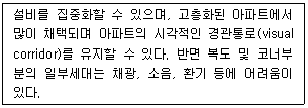
- 편복도 판상형
- 중복도 판상형
- 탑상(tower)형
- 복층 단차형
(정답률: 82%)
33. 지구단위계획에 관한 설명이 틀린 것은?
- 지구단위계획에 의하여 다른 도시·군관리계획이 변경되는 경우에는 가급적 양자를 동시에 입안하도록 한다.
- 다른 도시·군관리계획에 의하여 지구단위계획이 변경되는 경우에는 가급적 양자를 동시에 입안하도록 한다.
- 지구단위계획은 광역도시계획, 도시·군기본계획 등의 상위계획, 도시·군관리계획 및 수도권정비계획 등 관련 계획의 내용과 취지를 반영하여야 한다.
- 지구단위계획은 도시개발법·택지개발촉진법 등 개별사업법으로 지정된 사업구역에 대한 개발계획과 별도로 이들에 우선하여 수립하여야 한다.
(정답률: 69%)
34. 다음 주호군 형성기법 중 영역형성 기법을 나타내는 것이 아닌 것은?
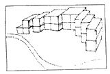
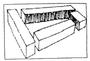
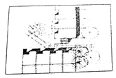
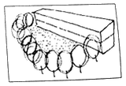
(정답률: 61%)
35. 다음 중 1대당 주차 소요면적이 가장 작은 각도주차의 형식은? (단, 소형차의 경우이며 장애인용 주차단위 구획의 경우는 고려하지 않는다.)
- 30° 전진주차
- 45° 전진주차
- 60° 후진주차
- 90° 후진주차
(정답률: 75%)
36. 다음 그림과 같은 지형에서 A-B 두지점 사이의 경사가 10% 라면 A-B간의 수평거리는? (단, 등고선은 5m간격임)
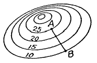
- 100m
- 150m
- 200m
- 250m
(정답률: 82%)
37. 산업혁명 이후 발생한 영국의 전원도시 운동의 전개과정에 대한 설명으로 틀린 것은?
- 레치워스(Letchworth), 웰윈(Welwyn) 등이 건설되면서 본격화 되었다.
- 도시인구의 대부분이 도시산업시설의 집적지에 혼재함으로써 나타난 도시사회의 문제들을 해결하고자 제시되었다.
- 레치워스(Letchworth)는 스와송(Louis de Soissons)에 의하여 계획되었다.
- 전원도시운동의 파급효과는 이후 여러 나라의 위성도시 및 신도시의 개발방향으로 계승되었다.
(정답률: 79%)
38. 순인구밀도가 250인/ha이고 주택용지율이 70%일 때, 총인구밀도는?
- 1⑤인/ha
- 175인/ha
- 265인/ha
- 3⑤인/ha
(정답률: 83%)
39. 공동주택의 배치시 도로 및 주차장의 경계선으로부터 공동주택의 외벽까지 최소 얼마 이상을 띄워야 하는가? (단, 기타의 경우는 고려하지 않는다.)
- 1m
- 2m
- 3m
- 5m
(정답률: 76%)
40. 보행자도로와 차도를 동일한 공간에 설치하고 보행자의 안전성을 향상하는 동시에 주거환경을 개선하는 방안으로 1970년대에 제시되었으며, 보행자를 위주로 하는 도로에 차량이 부수적이고 제한적으로 이용하는 방식은?
- 보차혼용방식
- 보차병행방식
- 보차분리방식
- 보차공존방식
(정답률: 80%)
3과목: 도시개발론
41. 다음 중 주민참여형 도시개발의 유형과 가장 거리가 먼 것은?
- BTL방식
- 민간협약
- 주민투표
- 지구차원의 계획
(정답률: 75%)
42. 개발권양도제(TDR)의 목적으로 가장 거리가 먼 것은?
- 납세자 보호
- 역사적 건축물 보호
- 과밀지역의 개발 제한
- 사업 인프라 비용 절감
(정답률: 70%)
43. 부동산금융에 관한 설명 중 틀린 것은?
- 부동상금융은 기간을 기준으로 단기금융과 장기금융으로 구분한다.
- 부동산개발금융은 단기금융과 타인자본이 가장 큰 비중을 차지한다.
- 개발단계에서 민간금융기관들은 사업의 총비용과 개발에 따른 수익성을 가장 중요시한다.
- 관리운용단계에서는 개발된 부동산의 임대나 매각등과 관련한 사업 자체의 수익성이 중요한 고려요소이다.
(정답률: 65%)
44. 영국의 근대도시화과정에서 나타난 도시화의 문제를 해결하고자 전원도시의 개념을 처음으로 주장한 사람은?
- 레이몬드 언윈
- 르 꼬르뷔지에
- 에버네저 하워드
- 피에르 랑팡
(정답률: 82%)
45. 다음 중 운용시장의 형태가 공개시장(public market)이고 자본의 성격이 대출투자(debt financing)인 유형에 속하는 부동산 투자는?
- 상업용 저당채권
- 사모부동산펀드
- 직접대출
- 직접투자
(정답률: 74%)
46. 수요예측방법의 시계열분석기법인 이동평균법에 대한 설명이 아닌 것은?
- 3개월 미만의 단기분석에 사용한다.
- 규모가 작은 신제품의 시장 예측에 사용한다.
- 배우기 쉬우나 결과해석이 어렵다.
- 이용비용이 매우 적다.
(정답률: 70%)
47. 개발사업의 위험을 재무·건설·운영·정책 및 환경위험의 네 가지로 분류할 때, 사어브이 진행단계에서 사업계획 변동위험, 분양 및 임대 위험, 소유권 이전단계의 위험이 존재하는 유형은?
- 재무위험
- 건설위험
- 운영위험
- 정책 및 환경위험
(정답률: 72%)
48. 인구가 10만명인 도시에서 다음 조건에 맞게 상업지역의 면적을 산출하면 약 얼마인가?
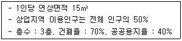
- 262.ha
- 59.5ha
- 35.7ha
- 21.5ha
(정답률: 75%)
49. 도시지역의 인구변화에 따른 도시화 단계의 순서가 옳은 것은?
- 도시화 단계 → 반도시화 단계 → 재도시화 단계 → 교외화 단계
- 도시화 단계 → 교외화 단계 → 반도시화 단계 → 재도시화 단계
- 도시화 단계 → 재도시화 단계 → 교외화 단계 → 반도시화 단계
- 도시화 단계 → 재도시화 단계 → 반도시화 단계 → 교외화 단계
(정답률: 92%)
50. 「도시개발법」에 아래와 같이 규정한 내용은?
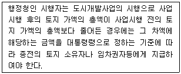
- 환지청산금
- 입체환지보상금
- 감보보상금
- 감가보상금
(정답률: 71%)
51. 도시개발사업의 토지확보방식에 따른 사업분류에 해당하지 않는 것은?
- 수용·사용방식
- 혼용방식
- 환지방식
- 상환방식
(정답률: 81%)
52. 환지방식 개발사업의 특성이 아닌 것은?
- 원칙적으로 지구 내 토지소유자는 토지를 수용 당하거나 떠나야 하는 문제가 없다.
- 권리자는 사업에 필요한 비용을 비교적 공평하게 분담한다.
- 사업시행자는 토지를 매입할 필요가 없으므로 그만큼 비용이 줄어든다.
- 공공시설 관리자는 필요한 공공용지를 조성원가에 확보할 수 있고, 사업시행에 유리한 장소에 용지를 마련하여 이윤을 최대화 할 수 있다.
(정답률: 48%)
53. 도시 및 주거환경정비법에서 규정하는 정비사업의 유형이 아닌 것은?
- 주거환경개선사업
- 주택재개발사업
- 주택재건축사업
- 도심재개발사업
(정답률: 82%)
54. 1958년 네덜란드 헤이그에서 열린 제1회 도시재개발에 관한 국제세미나에서 정의한 재개발 방법에 해당하지 않는 것은?
- 전면재개발(Redevelopment)
- 개량재개발(Remodeling)
- 수복재개발(Rehabilitation)
- 보전재개발(Conservation)
(정답률: 78%)
55. 다음 중 사업타당성을 판단할 수 없는 도시개발사업은?
- A사업의 순현재가치(FNPV)가 1000억원이다.
- B사업의 내부수익률(FIRR)은 10%이며, 기대수익률은 9%이다.
- C사업은 비용편익비(B/C Ratio)가 0.95이다.
- D사업은 1년차에 비용이 1000억원 발생하고, 5년차에 수익이 1100억원 발생하였다.
(정답률: 76%)
56. 산업입지 및 개발에 관한 법률에 따라, 산업의 적정한 지방분산을 촉진하고 지역경제의 활성화를 위하여 지정하는 산업단지는?
- 국가산업단지
- 일반지방산업단지
- 도시첨단산업단지
- 농공단지
(정답률: 79%)
57. 다음 중 Huff모형에 대한 설명으로 옳지 않은 것은?
- 개별소매점의 고객흡입력을 계산하는 방법이다.
- 상업시설을 이용할 확률은 상업시설의 크기와 관계있다.
- 모형에서 중요한 변수 중 하나는 상점까지의 거리다.
- 상업시설을 이용할 확률은 상점까지의 거리에 비례한다.
(정답률: 65%)
58. 민관합동의 부동산개발금융방식인 프로젝트파이낸싱(PF)에 대한 설명으로 틀린 것은?
- 협의의 의미로 프로젝트 자체의 사업성과 그로부터의 현금흐름을 바탕으로 자금을 조달하는 것을 말한다.
- PF의 특징 중 하나인 비소구금융(non-recourse financing)이란 투자자의 부담을 투자액 범위 내로 한정하는 방식을 말한다.
- PF의 특징 중 하나인 부외금융(off-balance-sheet financing)이란 프로젝트회사의 부채가 손익계산서상에 나타남으로서 프로젝트회사의 자본감소가 사업성에 영향이 없도록 하는 것을 의미한다.
- 광의의 의미로 특정 사업의 소요자금을 조달하기 위한 일체의 금융방식을 의미하며 개발사업과 관련한 모든 금융방식을 프로젝트파이낸싱이라 할 수 있다.
(정답률: 73%)
59. 택지개발사업의 시행자로 지정될 수 없는 자는?
- 국가·지방자치단체
- 「지방공기업법」에 따른 지방공사
- 「한국토지주택공사법」에 따른 한국토지주택공사
- 토지소유자 조합
(정답률: 87%)
60. 대중교통중심개발(TOD)의 주요 원칙으로 틀린 것은?
- 대중교통 정거장을 중심으로 개발하고 대중교통 정류장으로부터 보행거리 내에 상업, 주거, 업무, 공공시설 등을 혼합 배치한다.
- 지역 내 목적지간 보행친화적인 가로망을 구축한다.
- 생태적으로 민감한 지역이나 수변지, 양호한 공지의 보전을 추구한다.
- TOD내에는 대중교통서비스를 제공할 수 있는 수준의 저밀도 공공주택만을 조성한다.
(정답률: 85%)
4과목: 국토 및 지역계획
61. 우리나라의 인구규모별 도시순위가 아래와 같을 때 데이비스(K. Davis)의 종주화지수는 얼마인가?
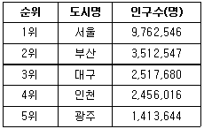
- 2.78
- 1.15
- 0.99
- 0.62
(정답률: 72%)
62. 국가발전의 목표를 경제적 효율성보다 사회 내 모든 집단과 개인 생활의 질적 향상에 치중하는 발전전략은?
- 기초수요이론
- 성장거점이론
- 종속이론
- 불균형개발이론
(정답률: 74%)
63. 국토기본법에 의한 지역계획으로서 특정 지역을 대상으로 경제·사회·문화·관광 등을 전략적으로 발전시키기 위하여 수립하는 개발계획은?
- 수도권발전계획
- 광역권 개발계획
- 특정지역 개발계획
- 개발촉진지구 개발계획
(정답률: 77%)
64. 최근 적용되고 있는 신개념의 주택보급률에 관한 설명 중 틀린 것은?
- 주택수를 일반가구수로 나누어 계산한다.
- 1인가구를 가구수에 포함시킨다.
- 주택재고의 배분상태(지가보유율)를 보여준다.
- 주택보급률이 낮을수록 주택공급이 부족함을 나타낸다.
(정답률: 46%)
65. 영국에서 1930년대 지역계획에 큰 영향을 미친 보고서 중, 스코트(Scott) 보고서의 주요 내용으로 옳은 것은?
- 인구분산과 공업재배치
- 토지공개념
- 개발이익의 사회적 환원
- 그린벨트
(정답률: 78%)
66. 투입-산출표(input-output table)의 이용을 체계적인 기법으로 완성시킨 사람은?
- 케네(Quesnay)
- 레온티예프(Leontief)
- 프리드만(J. Friedmann)
- 티부(Tiebout)
(정답률: 56%)
67. 입지적 상호의존과 최소비용입지이론의 통합을 시도한 학자는?
- 베버(Weber)
- 아이자드(Isard)
- 호텔링(Hotelling)
- 그린헛(Greenhut)
(정답률: 46%)
68. 우리나라 국토계획의 성격과 가장 거리가 먼 것은?
- 추상적·장기적 계획
- 정책지향적 계획
- 문제지향적 계획
- 경제·사회적 계획
(정답률: 67%)
69. 지역구분에 관한 다음 설명 중 옳은 것은?
- 부더빌(Boudeville)은 동질지역, 분극지역, 계획권역, 사업지역의 네 가지 유형으로 구분하였다.
- 클라센(Klaassen)은 1인당 소득수준과 지역경제성장률을 이용하여 결절지역을 넷으로 구분하였다.
- 한센(Hansen)은 미국 대도시권 표준통계구역(SMSA)의 설정기준을 제시하였다.
- 힐호스트(Hillhorst)는 동질성과 의존성이라는 기준과 분석 및 계획이라는 구분의 목적에 따라 지역을 구분하였다.
(정답률: 52%)
70. 성장거점지역에 있는 선도산업(leading industry)의 특성이 아닌 것은?
- 진보된 수준의 기술을 요구하는 새롭고 동적인 산업이다.
- 다른 산업보다 빠르게 성장한다.
- 전방파급 효과가 크고, 후방파급 효과는 없다.
- 쇄신에 대한 능력이 뛰어난 성장산업이다.
(정답률: 83%)
71. 지역이 가지고 있는 입지특성이나 생산환경의 변화에 따른 추세를 고려하여 지역산업이 전문화 정도를 추계하는 지역산업 성장분석기법은?
- 변이할당분석법(Shift-Share Analysis)
- 경제기반승수법(Economic Base Multiflier Analysis)
- 경제활동참가율(Labor Force Paricipation Rate) 분석
- 지역산업연관분석(Input-Output Analysis)
(정답률: 58%)
72. 다음 중 성장거점이론의 기본전제에 해당하지 않는 것은?
- 규모경제의 극대화를 위해 소수지역에 투자를 집중한다.
- 지역혁신을 도시지역에서부터 시도하여 농어촌지역으로 확산한다.
- 기반투자는 이용인구가 밀집된 곳의 우선순위가 높다.
- 지역 간 투자의 균등배분을 통한 균형발전을 도모한다.
(정답률: 65%)
73. 런던의 고성장을 통제하고, 지역정책수단을 국가이익차원에서 채택할 것을 건의한 바로우 보고서와 고용정책에 관한 비버리지 보고서를 작성하여, 전후 영국지역정책의 기초를 다진 기구는?
- 비영리산업단지공사
- 세계경제발전위원회
- 특별지역재건협회
- 인구 및 산업분포에 관한 왕립위원회
(정답률: 75%)
74. 수출기반이론(경제기반이론)의 장점으로 틀린 것은?
- 지역성장이론 중 가장 단순하고 분명하다.
- 산업활동을 기반활동과 비기반활동으로 구분하기 용이하다.
- 다양한 공간적범위에 적용이 가능하다.
- 다른 모형에 비하여 분석에 필요한 자료의 양이 상대적으로 적다.
(정답률: 48%)
75. 다음 중 지역계획의 형성배경과 가장 거리가 먼 것은?
- 지역적 문제의 심각성을 인식하고 개선하고자 했던 계획적 노력과 이론적 발전이 있었기 때문이다.
- 산업화 및 도시화에 따른 지역의 기능적인 문제가 발생하였기 때문이다.
- 지역주의 또는 지방주의에 부응하는 지역계획에 대한 요구 때문이다.
- 고도의 경제성장으로 인해 발생한 산업 간의 성장격차를 줄여 산업 간 불균형 성장을 우선적으로 필요로 하였기 때문이다.
(정답률: 71%)
76. 중심성을 통해 도시규모의 적정성을 이해하며, 그 중심성에 의해 도시들은 한 지역 내에 있어서 공간의 기능적 계측구도를 형성하고 있다고 이해한다. 울만(E. Ullman)이 제시하는 중심성을 측정하는 기준이 아닌 것은?
- 인구규모
- 도시 간 전화통화수
- 도·소매 거래량
- 세금
(정답률: 72%)
77. 국토기본법에서 정한 국토관리의 기본 이념으로 적합하지 않은 것은?
- 국토의 균형있는 발전
- 경쟁력 있는 국토여건의 조성
- 환경친화적인 국토관리
- 국토에 따른 사회제제의 개혁
(정답률: 83%)
78. 크리스탈러의 중심지 이론(Central place theory)에서 가정한 내용으로 틀린 것은?
- 모든 지역의 생산원가는 동일한 수준이다.
- 자연자원이 균일하게 분포한 평탄한 공간이다.
- 상품의 수송비용은 거리에 비례한다.
- 인구가 균일하게 분포한다.
(정답률: 56%)
79. 다음 지역계획의 이론들을 그 발생시기가 빠른 것부터 순서대로 옳게 나열한 것은?
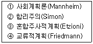
- ① - ② - ③ - ④
- ① - ② - ④ - ③
- ① - ③ - ④ - ②
- ① - ③ - ② - ④
(정답률: 61%)
80. 크리스탈러(W. Christaller)가 도시정주지를 설명하는데 사용한 R(Range, 범위)와 T(Threshold, 한계거리)의 개념에 따라, 기업이 손해를 보는 상황을 설명한 것은?
- R ＞ T
- R ＜ T
- R = T
- T = 1
(정답률: 78%)
5과목: 도시계획관계법규
81. 택지개발지구가 고시된 날부터 최대 얼마 이내에 시행자가 택지개발사업 실시계획의 작성 또는 승인 신청을 하지 아니하는 경우 지정권자는 그 지정을 해제하여야 하는가?
- 2년 이내
- 3년 이내
- 5년 이내
- 10년 이내
(정답률: 62%)
82. 산업입지 및 개발에 관한 법률상 산업단지지정의 제한에 대한 아래 설명과 관련하여 밑줄 그은 부분에 대한 기분이 잘못 제시된 것은?
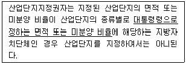
- 국가산업단지 : 시·도별로 미분양 비율 15% 이상
- 일반산업단지 : 시·도별로 미분양 비율 30% 이상
- 도시첨단산업단지 : 시·도별로 미분양비율 15% 이상
- 농공단지 : 시·군·자치구별로 100만m2부터 200만m2까지의 범위 안에서 농공단지개발세부지침이 정하는 면적 이상 또는 미분양비율 30% 이상
(정답률: 60%)
83. 주택법상 사업주체가 대통령령으로 정하는 호수 이상의 주택건설사업을 시행하는 경우 지방자치단체가 설치하는 도로 및 상하수도시설에 대한 설치비용에 대하여 얼마의 범위에서 국가가 보조할 수 있는가?
- 그 비용의 전부
- 그 비용의 2분의 1
- 그 비용의 3분의 1
- 그 비용의 4분의 1
(정답률: 85%)
84. 택지개발사업시행자가 토지매수 업무와 손실보상 업무를 위탁할 때 토지매수 금액과 손실보상 금액의 얼마의 범위에서 대통령령으로 정하는 요율의 위탁수수료를 지급하여야 하는가?
- 5/100의 범위
- 4/100의 범위
- 3/100의 범위
- 2/100의 범위
(정답률: 62%)
85. 건축법에서 지하층이란 건축물의 바닥이 지표면 아래에 있는 층으로 바닥에서 지표면까지 평균높이가 해당 층 높이의 얼마 이상인 것을 말하는가?
- 2분의 1 이상
- 3분의 1 이상
- 4분의 1 이상
- 5분의 1 이상
(정답률: 83%)
86. 택지개발사업, 산업단지개발사업, 도시재개발사업, 도시철도건설사업, 그 밖에 단지 조성 등을 목적으로 하는 사업을 시행할 때에 일정 규모 이상 설치하여야 하는 주차장은?
- 노상주차장
- 노외주차장
- 부설주차장
- 노면주차장
(정답률: 59%)
87. 국토기본법에서 수립하는 조사 및 계획의 수립 주체가 잘못 연결된 것은?
- 국토종합계획의 수립 - 국토해양부장관
- 도종합계획의 수립 - 도지사
- 부문별계획의 수립 - 중앙행정기관의 장
- 국토조사 - 지방자치단체의 장
(정답률: 69%)
88. 개발제한구역의 지정에 따라 국토해양부장관이 매수청구인에게 매수대상토지임을 알린 경우, 몇 년의 범위에서 대통령령으로 정하는 기간에 매수계획을 수립하여 그 매수대상토지를 매입하여야 하는가?
- 2년의 범위
- 3년의 범위
- 5년의 범위
- 10년의 범위
(정답률: 38%)
89. 과밀부담금의 감면에 대한 내용으로 틀린 것은?
- 국가나 지방자치단체가 건축하는 건축물에는 부담금을 부과하지 아니한다.
- 과학기술기본법에 따른 과학연구단지에는 부담금을 부과하지 아니한다.
- 건축물 중 수도권만을 관할하는 공공법인의 사무소에 대하여는 부담금을 부과하지 아니한다.
- 도시 및 주거환경정비법에 따른 도시환경정비사업으로 건축하는 건축물에는 부담금의 100분의 50을 감면한다.
(정답률: 63%)
90. 수도권정비계획법에 따른 수도권의 권역 구분이 모두 옳은 것은?
- 과밀억제권역, 자연보건권역, 개발유도권역
- 성장관리권역, 이전촉진권역, 환경보전권역
- 성장관리권역, 개발유도권역, 환경보전권역
- 과밀억제권역, 성장관리권역, 자연보전권역
(정답률: 83%)
91. 다음 중 도시·군기본계획의 원칙적인 수립권자가 아닌 자는?
- 국토해양부장관
- 광역시장
- 시장 또는 군수
- 특별시장
(정답률: 48%)
92. 도시개발법에 따른 아래 내용에서 ( )에 들어갈 내용이 모두 옳은 것은?
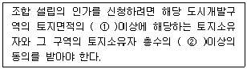
- ① 3분의 2, ② 3분의 2
- ① 3분의 2, ② 2분의 1
- ① 2분의 1, ② 3분의 2
- ① 2분의 1, ② 2분의 1
(정답률: 85%)
93. 다음 중 중앙도시계획위원회에 대한 설명이 옳은 것은?
- 위원장과 부위원장 각 1명을 포함하여 25명 이상 30명 이내의 위원으로 구성한다.
- 중앙도시계획위원회의 위원장은 국토해양부장관이다.
- 공무원이 아닌 위원의 수는 10명 이상으로 하고, 그 임기는 3년으로 한다.
- 위원은 관계 중앙행정기관의 공무원과 도시계획에 관한 학식과 경험이 풍부한 자 중에서 위원장이 임명하거나 위촉한다.
(정답률: 59%)
94. 도시·군계획시설의 결정·구조 및 설치기준에 관한 규칙에서 자동차운전학원, 장례식장, 유통업무설비가 모두 입지할 수 있는 용도지역은?
- 일반주거지역
- 준공업지역
- 유통상업지역
- 생산녹지지역
(정답률: 68%)
95. 다음 중 건폐율에 관한 내용이 틀린 것은?
- 건폐율이란 대지면적에 대한 건축면적의 비율이다.
- 도시지역 내 주거지역의 건폐율 최대한도는 70% 이하이다.
- 수산자원보호구역의 건폐율에 관한 기준은 90% 이하 의 범위에서 국토해양부령으로 정하는 기준에 따라 조례로 따로 정한다.
- 토지이용의 과밀화를 방지하기 위하여 건폐율을 강화할 필요가 있는 경우, 대통령령으로 정하는 기준에 따라 조례로 건폐율을 따로 정할 수 있다.
(정답률: 67%)
96. 다음 중 자주식 주차장의 형태에 해당하지 않는 것은?
- 건축물식
- 기계식
- 지하식
- 지평식
(정답률: 80%)
97. 다음 공원시설 중 휴양시설에 해당하지 않는 것은?
- 야유회장
- 야영장
- 노인복지회관
- 전망대
(정답률: 65%)
98. 도시·군계획시설의 결정·구조 및 설치기준에 관한 규칙에 따른 도로의 일반적 결정기준이 틀린 것은?
- 도로의 폭은 당해 시·군의 인구 및 발전전망을 감안한 교통수단별 교통량분담계획, 당해 도로의 기능과 인근의 토지이용계획에 의하여 결정한다.
- 기존도로를 확장하는 경우에는 원칙적으로 양측 방향으로 확장하도록 한다.
- 보조간선도로와 집산도로의 배치간격은 250m 내외로 한다.
- 국도대체우회도로 및 자동차전용도로에는 집산도로 또는 국지도로가 직접 연결되지 않도록 한다.
(정답률: 84%)
99. 도시개발법에 따르면 청산금을 받을 권리나 징수할 권리를 얼마동안 행사하지 아니하면 시효로 소멸하는가?
- 1년
- 3년
- 5년
- 10년
(정답률: 46%)
100. 개발밀도관리구역으로의 지정 기준이 적합하지 않은 지역은?
- 당해 지역의 도로 서비스수준이 매우 낮아 차량통행이 현저하게 지체되는 지역
- 당해 지역의 도로율이 국토해양부령이 정하는 용도지역별 도로율에 20%이상 미달하는 지역
- 향후 2년 이내에 당해 지역의 하수 발생량이 하수 시설의 시설용량을 초과할 것으로 예상되는 지역
- 향후 2년 이내에 당해 지역의 학생수가 학교수행능력을 50%이상 초과할 것으로 예상되는 지역
(정답률: 75%)